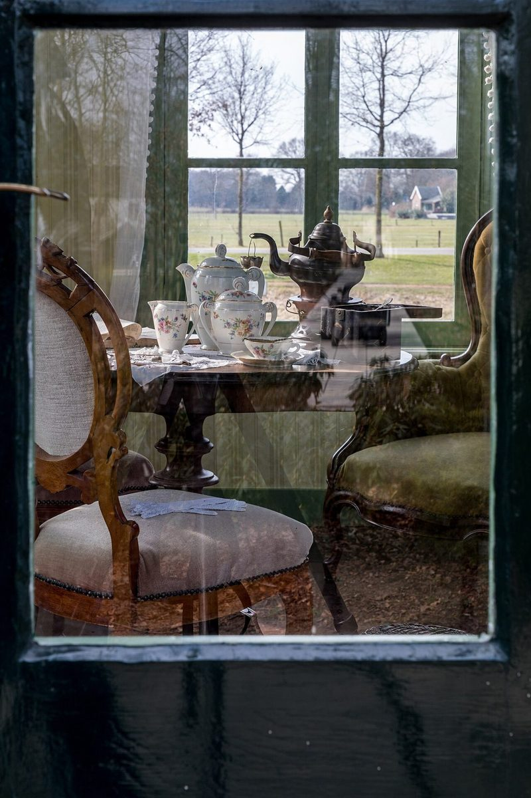
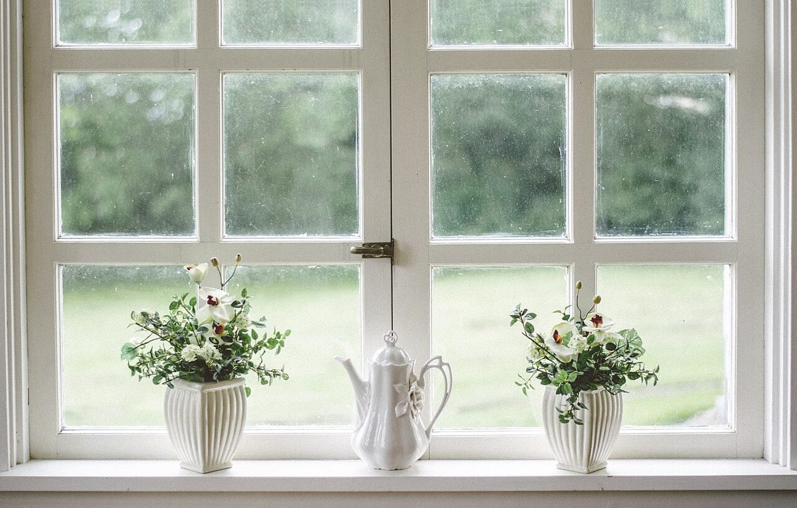
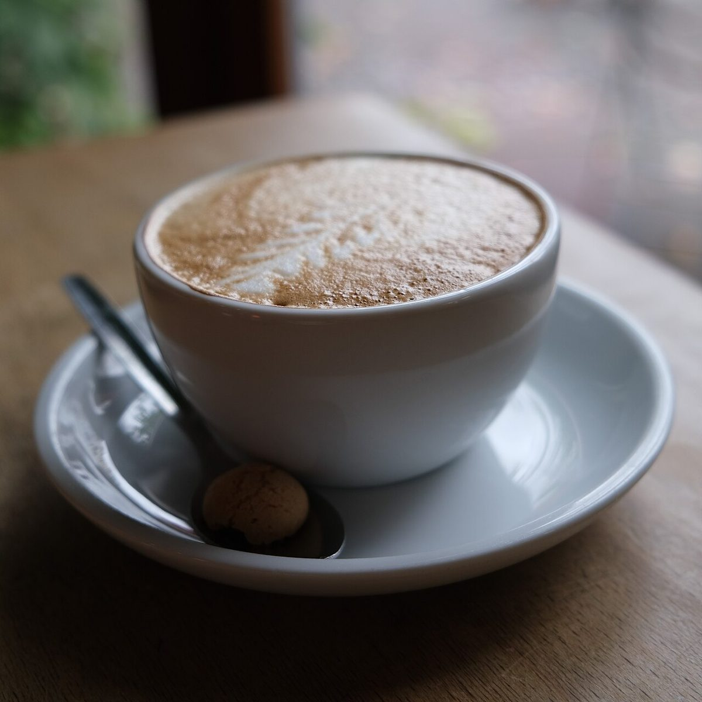

ラベル
缶の側面に貼る、小さなラベル
お店について確認できているのは、所在地とInstagramのアカウントだけです。
「想像してみる」部分は制作側が想像して書いたもので、お店の実際の様子・考え・メニューとは関係ありません。
確認できていること
- 店名は「GODMARIE COFFEE」、業種はカフェ
- 所在地は山口県山口市後河原133-4(〒753-0083)
- 電話番号はなし。連絡はInstagramから
- 営業時間・定休日・メニュー・価格・ご予約・駐車場は準備中

想像してみる
「COFFEE」の一杯と、丸いお供
由来は分かりません。制作側は、コーヒーの屋号から、カップのそばに小さな丸い焼き菓子が添えられた風景を連想しました。実際にそうしたお供があるかは分かりません。缶に貼るラベルのように、短い言葉で店を紹介できたらと考えています(実際のお店の姿ではありません)。


